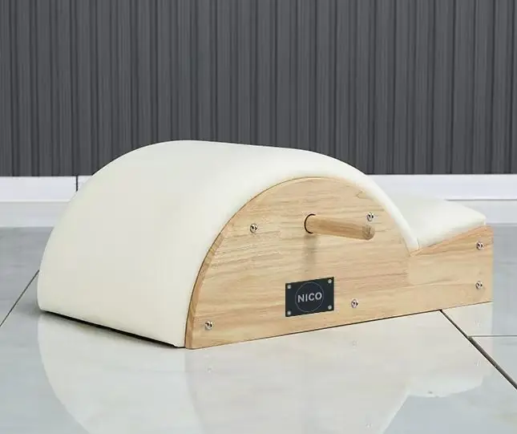

Der kleine, abgestufte Zylinder, der zur Mobilisierung der Wirbelsäule, zur Streckung des Brustkorbs und für Schulterübungen verwendet wird. Er ist leicht genug, um ihn zwischen dem Mattenbereich und dem Gerätebereich hin- und herzutragen, und stellt die kostengünstigste Möglichkeit dar, eine Gruppenstunde um ein Gerät zu ergänzen.

Jedes der unten aufgeführten Modelle wird auf Bestellung auf derselben Werkbank gefertigt. Vergleichen Sie Holzart, Größe, Federsatz und Positionierung und teilen Sie uns dann die Artikelnummer mit – wir erstellen Ihnen ein Angebot für dieses Modell.
Die Preise werden pro Bestellung angegeben – die Preise für Vertreter werden nicht veröffentlicht. Senden Sie uns die gewünschten Artikelnummern, und wir senden Ihnen ein Angebot sowie einen Musterplan zu.
| Modell | Code | Rahmen / Holz | Größe | Federn | Positionierung |
|---|---|---|---|---|---|
| Spine Corrector aus Kautschukholz | NIX104 | Thailändisches Kautschukholz der Güteklasse 5A | 0.9 × 0.4 × 0.3 m | — | Dübel im Lieferumfang enthalten |
| Spine Corrector aus weißem Ahorn mit Klavierlack-Oberfläche | NIK205 | Ahorn mit Klavierlack in Weiß | 0.9 × 0.4 × 0.3 m | — | Dübel im Lieferumfang enthalten |
| FAS-Weißahorn-Spine Corrector | NIK305 | Weißahorn in FAS-Qualität | 0.9 × 0.4 × 0.3 m | — | Dübel im Lieferumfang enthalten |
Alle Modelle können hinsichtlich Holzart, Polsterfarbe, Federung und Verpackung individuell angepasst werden. Die angegebenen Maße entsprechen der Standardausführung – andere Maße sind auf Anfrage erhältlich.
Eröffnung oder Erweiterung eines Studios: aufeinander abgestimmte 5-teilige Sets in einer Bestellung und mit einer einzigen Lieferung.
Containerladungsprogramme mit eigener Modellnummerierung und eigenem Datenblatt.
Herstellung unter Eigenmarke: Ihr Logo auf dem Rahmen, Ihre Farb- und Lederspezifikationen.
Ladder Barrel, Spine Corrector und die bidirektionale Ladder Bed für den klinischen Einsatz.
Kompakte Aluminium- und klappbare Serien für Wellnessräume mit begrenztem Platzangebot.
FBA-konforme Verpackung und Etikettierung für Reformer und faltbare Artikel für den privaten Gebrauch.
Fordern Sie noch heute ein individuelles Angebot an und nehmen Sie Kontakt mit kostenlose Muster auf.
Kontaktieren Sie unser Team